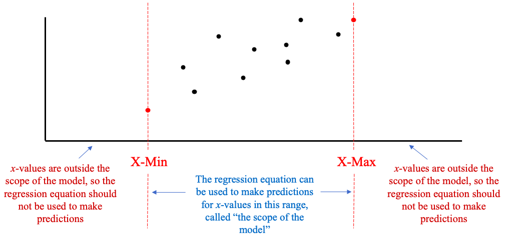
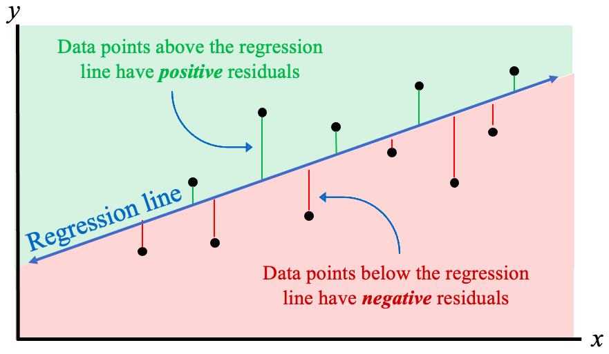
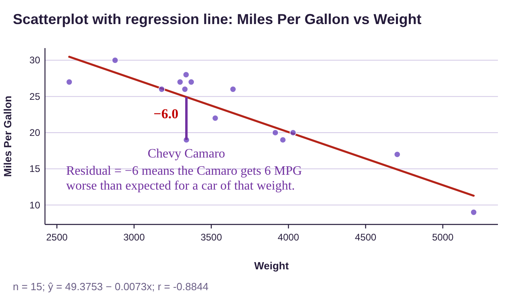
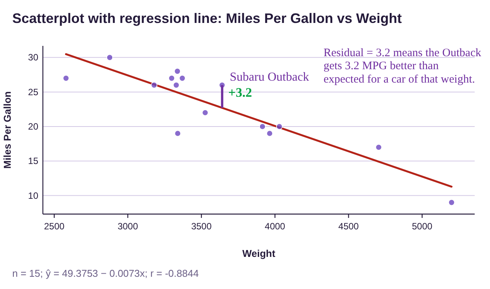
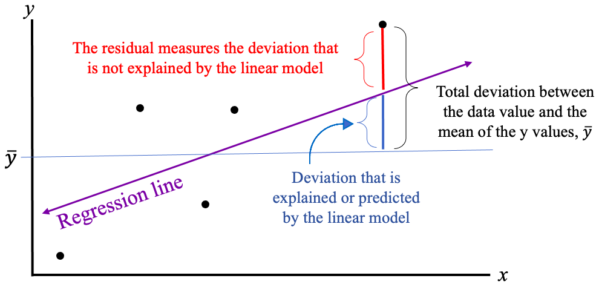
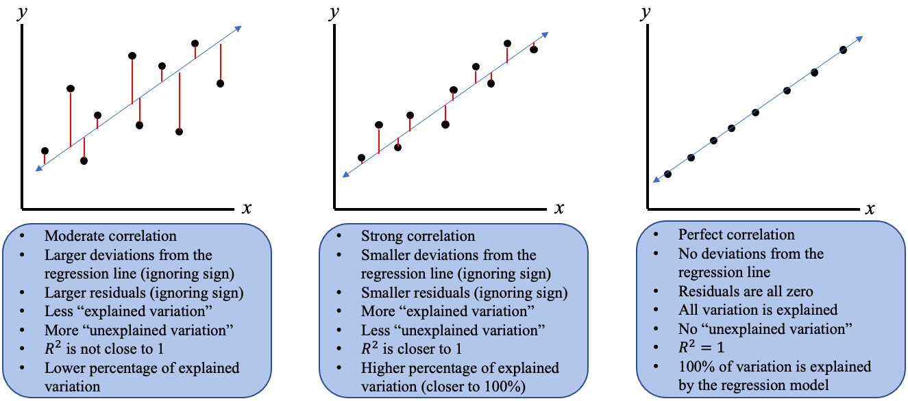
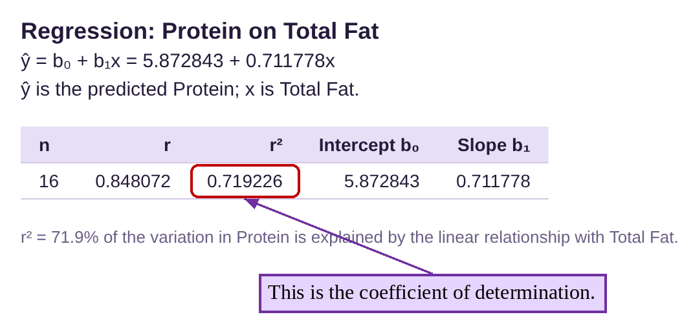
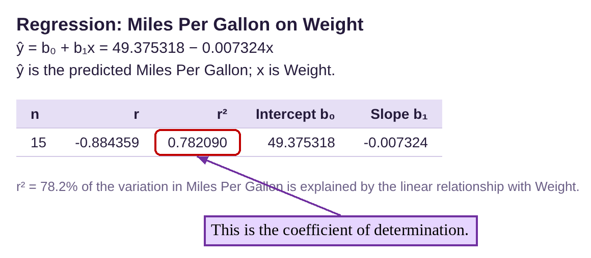

Section 4.3: Residuals and Explained Variation
Learning Objectives
1.Understand and interpret the “scope” of the least-squares regression line.
2.Describe, calculate, and interpret residuals.
3.Describe and interpret the Coefficient of Determination.
The Scope of the Least-Squares Regression Model
In section 4.2 we saw an example where the y-intercept of the least-squares regression line did not have a meaningful interpretation. In that example, we used the weight of a car in pounds as the explanatory variable x, and the fuel efficiency in miles per gallon (MPG) as the response variable y. The y-intercept would have occurred when the weight of a car was zero pounds. At that time, we mentioned that that was not possible, and we did not interpret the intercept for that reason. But what weights can we use for x in the equation? Can we use the equation to predict fuel efficiency for cars that weigh 1,500 pounds? What about cars that weigh 10,000 pounds? It makes intuitive sense that there should be limitations on how heavy or light a car could be for the equation to be useful.
It turns out that the answer to this question is not difficult. In practice, you can use the least-squares regression equation to make predictions for values that are in the range of the values where you collected the data, and the model should not be used to make predictions for values that are outside of the range of data you have.

Important Point!
The regression equation can only be used to make predictions about x-values that are in the range of values collected in your sample data! That means the regression equation should only be used to make a prediction for an x-value that is between the minimum x-value in the data and the maximum x-value in the data.
As we saw in section 4.2, the regression line can only be used as a model when there is a significant correlation between the variables. Now, we add that it can only make useful predictions for x-values between the minimum and maximum x-values from the sample data (or data values that are very close). Sometimes relationships between variables can appear to be linear where you collected data but be non-linear outside of that range.
Think of this example: If you conduct a survey in Boise, Idaho, the results may be useful in making predictions in Boise, but not useful at all in making predictions outside of Boise. We cannot use those results to make a prediction about San Francisco, CA, for example. If we want to make predictions about San Francisco, we need to collect data there. The same is true for numerical measurements. If I only collect data from people between the ages of 20 and 30, I can’t use the results to make predictions for children, or for people in their 70’s. COVID vaccines were rolled out this way. They were first approved for adults, then later for children. Why? The pharmaceutical companies collected data on adults first and were able to make predictions about the efficacy of the vaccines based on that data. Later, they collected data on children and showed the vaccines were safe and effective for that population as well.
Definition 1
Assume we have a set of bivariate data with a significant correlation. The scope of the least-squares regression model is the range of x-values where the model makes reliable predictions. If we call the minimum x-value X-Min and the maximum x-value X-Max, then any x-value that is between X-Min and X-Max is “within the scope of the model.” Any x-value that is far lower than X-Min or far higher than X-Max is “outside the scope of the model.” See figure 4.29.

Figure 4.29: The scope of the least-squares regression model.
Example 1: Finding the scope of the regression model
Table 2 contains data collected from fast food meals from several restaurant chains. The correlation between variables Total Fat and Protein is significant, and the regression model was found to be where x represents total fat in grams and is the predicted amount of protein, also measured in grams. You can copy the Protein vs Fat data (opens in a new tab). Can the model be used to predict the amount of protein for meals with 0, 40, or 100 grams of total fat? Compute the prediction only for the values within the scope of the model.
Table 2: Protein vs Fat | |||||||||||||||||
|---|---|---|---|---|---|---|---|---|---|---|---|---|---|---|---|---|---|
Total Fat | 8 | 11 | 27 | 26 | 40 | 43 | 15 | 22 | 9 | 12 | 11 | 8 | 12 | 38 | 49 | 54 | |
Protein | 12 | 15 | 24 | 30 | 39 | 48 | 11 | 24 | 28 | 9 | 2 | 11 | 13 | 26 | 33 | 43 | |
Solution:The smallest x-value in the data is 8, and the largest x-value in the data is 54. So here, X-Min = 8 and X-Max = 54. The model should make a reasonable prediction for any x-values between 8 and 54 grams of total fat. Thus, the model should not be used for x = 0 grams of total fat, nor for x = 100 grams of total fat. Both 0 and 100 are outside the scope of the model, so we make no predictions using these values. We can use the model to predict protein for x = 40 grams of total fat because it is between 8 and 54.
The predicted amount of protein for x = 40 grams of total fat is
This means fast food meals containing 40 grams of total fat will have 34.3 grams of protein, on average.
Now, in the last example, it would seem reasonable to use the model to predict protein for total fat values that were near X-Min and X-Max, even if they were outside the scope of the model. How far below X-Min = 8 or how far above X-Max = 54 you can go and get reliable results is subjective. For example, we could probably trust the model if we used it to predict protein for x = 6 (very close to X-Min =8) or x = 55 (very close to X-Max -54). As a guide, you can probably extend the scope of the model by 5 to 10% of the range of x-values both below X-Min and above X-Max, assuming the values make sense in the context of the variables. For the last example, the range of x-values is Range = 54 – 8 = 46. Five percent of 46 is and ten percent of 46 is , so you can probably trust the model to go two to four points lower than 8 and two to four points higher than 54. So, we can extend the model to make predictions from around 4 or 5 grams of total fat up to around 57 or 58 grams of total fat. The farther you extend outside the scope, the more likely the prediction you make will be wrong. So, you should always be careful making predictions outside the range of your data collection!
Residuals
When we use a regression line to model the linear trend, it is most often the case that the line does not pass through all the data the points. The points in the data set will be closer to the line when the correlation is strong and be farther from the line when the correlation is weak. A residual is a measure of how different a particular data value is from the predicted value found using the least-squares regression line.
Definition 2
A residual is the difference between the actual y-value and the predicted y-value from the least-squares regression line for a particular value of x. The formula is .
The residual is the signed (positive or negative) vertical distance from the data point to the regression line. See figure 4.30.
•Data points above the regression line will have positive residuals
•Data points below the line will have negative residuals.
•The sum of the residuals is always zero.

Figure 4.30: The residuals are the signed distances from the data points to the regression line.
The least squares regression line is the line that makes the sum of the squares of the residuals as small as possible (that is where the term “least-squares” comes from). Fortunately, we are using technology to compute the line, but we will still use residuals to measure data values against the predicted value from the regression equation. The sum of the squared residuals is also called the “unexplained variation” for reasons we will discuss later.
Example 2: Finding and interpreting a residual.
The data from example 13 in section 4.1 is given in Table 3. You can copy the Miles Per Gallon vs Weight data (opens in a new tab). In example 5 of section 4.2 we verified that there is a significant correlation and found the regression line , plotted in figure 4.31.
(a)Predict the gas mileage in MPG for a car that weighs 3339 pounds.
(b)The Chevy Camaro weighs 3339 pounds and gets 19 miles per gallon. What is the residual?
(c)Interpret the residual. Does the Chevy Camaro get better or worse gas mileage than expected, based on its weight?
Table 3: Miles Per Gallon vs Weight | |||||
|---|---|---|---|---|---|
Car | Weight | Miles Per Gallon | Car | Weight | Miles Per Gallon |
69 Chevy truck | 5200 | 9 | Honda Civic | 2877 | 30 |
Chevy Camaro | 3339 | 19 | Honda Pilot | 4030 | 20 |
Dodge Charger | 3964 | 19 | Hyundai Tucson | 3329 | 26 |
Dodge Neon | 2580 | 27 | Mazda 6 | 3179 | 26 |
Ford Escape | 3298 | 27 | Subaru Outback | 3641 | 26 |
Ford F-150 | 4705 | 17 | Toyota Rav4 | 3370 | 27 |
Ford Mustang | 3526 | 22 | Toyota Tacoma | 3915 | 20 |
Honda CR-V | 3337 | 28 | |||

Figure 4.31: Miles Per Gallon vs Weight scatterplot and least-squares regression line.
Solution:(a)To predict the MPG for a car that weighs 3339 pounds, plug into the equation.
So, cars that weigh 3339 pounds are expected to get about 25.0 MPG, on average.
(b)The residual is . The observed mileage is 19, and the predicted mileage is 25.0, so the residual is
(c)Since the Chevy Camaro from the data set gets 19 MPG, we can see that it performs worse than the predicted mileage of 25.0 MPG. The residual = – 6.0 tells us how much worse than predicted. The interpretation is that the Chevy Camaro gets 6 MPG less than the average of cars of the same weight. The phrase “less than” takes the place of the negative sign in the residual. You can visualize the residual as the length of the purple line segment connecting the regression line to the point representing the Camaro below it in figure 4.32. Of course, people don’t purchase a Camaro to get good gas mileage!

Figure 4.32: Miles Per Gallon vs Weight with the Chevy Camaro residual.
Example 3: Finding and interpreting a residual
Use the data and regression equation from example 2 to find and interpret the residual for a Subaru Outback.
Table 3: Miles Per Gallon vs Weight | |||||
|---|---|---|---|---|---|
Car | Weight | Miles Per Gallon | Car | Weight | Miles Per Gallon |
69 Chevy truck | 5200 | 9 | Honda Civic | 2877 | 30 |
Chevy Camaro | 3339 | 19 | Honda Pilot | 4030 | 20 |
Dodge Charger | 3964 | 19 | Hyundai Tucson | 3329 | 26 |
Dodge Neon | 2580 | 27 | Mazda 6 | 3179 | 26 |
Ford Escape | 3298 | 27 | Subaru Outback | 3641 | 26 |
Ford F-150 | 4705 | 17 | Toyota Rav4 | 3370 | 27 |
Ford Mustang | 3526 | 22 | Toyota Tacoma | 3915 | 20 |
Honda CR-V | 3337 | 28 | |||
Solution:The residual is the observed mileage of a Subaru Outback (26 MPG) minus the predicted mileage for cars that weigh 3641 pounds (the weight of the Outback). First, we find the predicted mileage by substituting x = 3641 into the regression equation.
Photo by Jacob Rubich (opens in a new tab) on Unsplash (opens in a new tab)
So, cars that weigh the same as a Subaru Outback will average about 22.8 miles per gallon. Next, the residual is
. The interpretation of the residual is that the Subaru Outback gets about 3.2 MPG higher than the average for cars of that weight. The residual is positive, indicating that the point representing the Subaru Outback is above the regression line. See figure 4.33.

Figure 4.33: Miles Per Gallon vs Weight with the Subaru Outback residual.
Explained Variation
When you consider the scatter plot for weights of cars and gas mileage from the previous two examples, you can see that few of the data points are on the least-squares regression line. Data points that are on the line are exactly where we expect them to be using the weight as a predictor. In that sense, the model has explained them. Data points that are not on the regression line are not where they were predicted to be and have what we call unexplained deviations. The unexplained deviation comes from factors other than the weight of the car. Fuel efficiency is also impacted by aerodynamics and engine size, for example. So, the weight of a car only partially explains the gas mileage it will get. Our next goal is to find a way to describe how large of a factor the weight is in predicting the gas mileage.
As an example of explained and unexplained variation, consider your paychecks for working an hourly job. Assume you are paid $20 per hour. The variation in your paycheck will be due to the number of hours that you work. Weeks you work fewer hours will result in smaller paychecks. Weeks when you work more hours will result in larger paychecks. The differences in your paychecks are called “explained variations” because the number of hours you work will “explain” the amount of pay. Now, if you work on a commission as well as hourly pay, the variation in your paycheck is due to not only the hours worked (the explained variation), but also by the number and size of commissions. The amount of pay that comes from commissions is not explained by the number of hours worked so it is called “unexplained variation.” You can think of explained variation as the variation that is accounted for by the x-variable. Unexplained variation is the any further variation. The total variation is the sum of the explained variation (from the regression model) and the unexplained variation (the left-over).
The coefficient of determination is the ratio of explained variation to total variation, or simply the proportion of explained variation. The derivation of the idea is complicated, but the interpretation is useful and not very difficult to understand. To create the formula, the total variation is calculated using the mean of all the y-values in the data, . The total deviation for one observation is the difference between the observed y-value and the mean , ( is indicated by the horizontal line in figure 4.34). The total deviation can be divided into two parts, the part that is explained by the linear model (the blue segment which shows the vertical distance between the mean and the regression line in figure 4.34), and the residual that is not explained by the linear model (the red segment which shows the vertical distance between the data value and the regression line).

Figure 4.34: Total deviation, explained deviation, and unexplained deviation.
It is outside the scope of our discussion to prove that the sum of the squared residuals is the unexplained variation, and that the remainder of the total of the squared total deviations is the explained variation. The derivation of the formula looks very similar to deriving the standard deviation formula, but again, we will use technology to compute it. We only ask that you remember that residuals measure the unexplained deviations that lead us to the coefficient of determination.
Definition 3
The Coefficient of Determination is a measure of the proportion of the variation in y that is explained by the linear model using x as the explanatory (predictor) variable. The notation for the coefficient of determination is . We will use technology to obtain it, but a useful formula is that it is the correlation between x and y squared.
•The coefficient of determination is found in the regression output of STATBELT Utility, called r².
•The value is the correlation squared.
•The coefficient of determination is usually converted to a percent when it is interpreted.
•The interpretation is often phrased as “ gives the percentage of the variation in the y- variable that is explained by the x-variable.”
•The closer is to 1, the more variation is explained by the regression model. See figure 4.35.

Figure 4.35: Interpretation of the coefficient of determination.
When the data are scattered far from the least-squares regression line, there is a weaker correlation, the residuals are larger in magnitude, and less of the variation is explained by the model. When the data are closer to the least-squares regression line, there is a stronger correlation, the residuals are smaller in magnitude, and more of the variation is explained by the model. If there is a perfect correlation, the model explains 100% of the variation.
 Tip!
Tip!If the correlation r is close to 1 or -1, then will be close to 1. When you convert the coefficient of determination to a percent, the value will be close to 100%, indicating that there is a strong linear correlation and that the model is very predictive!
Example 4: Computing the Coefficient of Determination
In section 4.1 we considered the student exam scores listed in Table 1. We calculated the correlation to be . Find and interpret the coefficient of determination.
Table 1: Student Exam Scores | ||
|---|---|---|
Name | Exam 1 Score | Exam 2 Score |
Derek | 70 | 81 |
Marshawn | 95 | 87 |
Isabel | 80 | 82 |
Sophia | 83 | 79 |
Juan | 82 | 90 |
Jackson | 10 | 76 |
Carol | 0 | 73 |
Photo by Kenny Eliason (opens in a new tab) on Unsplash (opens in a new tab)
Solution:Since we are given the correlation, we can use the formula . Using a calculator, we get the coefficient of determination is . This means that approximately 66.35% of the variation in the exam 2 scores is explained by the exam 1 score. Note that 100 – 66.35 = 33.65% is unexplained by the exam 1 score. So, the least-squares regression line does a good job of identifying a trend, capturing 66.35% of the variation, but the predictions it gives are not very precise. The unexplained 33.65% of variation is more than a 3-letter grade difference!
Example 5: Calculating and Interpreting the Coefficient of Determination
The data from fast food restaurant chains used in example 1 is listed in Table 2. Find and interpret the coefficient of determination. You can copy the Protein vs Fat data (opens in a new tab).
Table 2: Protein vs Fat | |||||||||||||||||
|---|---|---|---|---|---|---|---|---|---|---|---|---|---|---|---|---|---|
Total Fat | 8 | 11 | 27 | 26 | 40 | 43 | 15 | 22 | 9 | 12 | 11 | 8 | 12 | 38 | 49 | 54 | |
Protein | 12 | 15 | 24 | 30 | 39 | 48 | 11 | 24 | 28 | 9 | 2 | 11 | 13 | 26 | 33 | 43 | |
Solution:We have two options. We could calculate the correlation using Descriptive Statistics → Correlation. Check both variables, then click “Show results in a new window.” Then we could use a calculator to square the correlation to find .

The coefficient of determination is .
Alternatively, we could use Descriptive Statistics → Regression. Choose “Total Fat” for “Explanatory variable (x)” and “Protein” for “Response variable (y),” then click “Show results in a new window.”

Either way, the coefficient of determination is 0.719. To interpret it, we multiply it by 100 to make it a percent. That gives us . We interpret this as 71.9% of the variation in protein is explained by the fat content.
Keep in mind that there are other factors besides fat content that make up the remaining 100 – 71.9 = 28.1% of the variation in protein. For example, is the meal made with a lean source of protein, such as beans or chicken? Or is the meal fried with lots of cheese? It is also important to keep in mind that the total fat is not causing the protein to be high or low. These variables are correlated, so knowing one gives insight into the other. How much insight? About 71.9% of protein content is accounted for by knowing the fat content (not caused by it!) That’s a good measure of the predictive power of the model.
Important Point!
Remember that like correlation, the coefficient of determination does not measure causation. We can’t say that X% of the variation in the response variable is “caused by” the explanatory variable, because there may be underlying factors causing variation. It is more correct to say that is a measure of how much of the variation in the y-value can be determined if we knew the x-value. If is close to 100%, then knowing the x-value gives you a great deal of predictive power. If is much lower, knowing the x-value is not as helpful.
Example 6: Calculating and Interpreting the Coefficient of Determination
The data from example 2 is given in Table 3. You can copy the Miles Per Gallon vs Weight data (opens in a new tab). Find and interpret the coefficient of determination. How much impact does knowing the weight of a car have on predicting its gas mileage?
Table 3: Miles Per Gallon vs Weight | |||||
|---|---|---|---|---|---|
Car | Weight | Miles Per Gallon | Car | Weight | Miles Per Gallon |
69 Chevy truck | 5200 | 9 | Honda Civic | 2877 | 30 |
Chevy Camaro | 3339 | 19 | Honda Pilot | 4030 | 20 |
Dodge Charger | 3964 | 19 | Hyundai Tucson | 3329 | 26 |
Dodge Neon | 2580 | 27 | Mazda 6 | 3179 | 26 |
Ford Escape | 3298 | 27 | Subaru Outback | 3641 | 26 |
Ford F-150 | 4705 | 17 | Toyota Rav4 | 3370 | 27 |
Ford Mustang | 3526 | 22 | Toyota Tacoma | 3915 | 20 |
Honda CR-V | 3337 | 28 | |||
Solution:With the data in two columns in STATBELT Utility, select Descriptive Statistics → Correlation, and check both columns.

The coefficient of determination is . Note that squaring the negative correlation gives a positive number!
Alternately, you can select Descriptive Statistics → Regression, then choose Weight for “Explanatory variable (x)” and Miles Per Gallon for “Response variable (y)” and click “Show results in a new window.”

So, of the variation in miles per gallon is explained by the weight of the car. Again, the fuel efficiency is not caused exclusively by the weight, although it does seem reasonable to conclude that, in this case, higher weights should cause worse mileage. But there remains 100 – 78.2 = 21.8% of gas mileage that is caused by other factors, like engine size, design, etc. But clearly the weight of the car is an important factor in determining the fuel efficiency, accounting for 78.2%of the total variation.
Example 7: Calculating and Interpreting the Coefficient of Determination
The data from example 6 in section 4.2 includes heart rate and HDL cholesterol levels and is shown in Table 4. The scatter plot and correlation are shown in figure 4.36. You can copy the HDL Level vs Heart Rate data (opens in a new tab). Find and interpret the coefficient of determination.
Photo by Hush Naidoo Jade Photography (opens in a new tab) on Unsplash (opens in a new tab)
Table 4: HDL Level vs Heart Rate | |||
|---|---|---|---|
Heart Rate | HDL Level | Heart Rate | HDL Level |
80 | 52 | 78 | 61 |
70 | 48 | 82 | 69 |
80 | 35 | 67 | 60 |
71 | 55 | 66 | 62 |
72 | 53 | 64 | 63 |
78 | 54 | 71 | 66 |
78 | 46 | 72 | 43 |
74 | 56 | 70 | 30 |
67 | 53 | 68 | 40 |
64 | 46 | 76 | 62 |


Figure 4.36: HDL cholesterol vs Heart Rate scatterplot and correlation.
Solution:The coefficient of determination is . So,
of the variation in HDL cholesterol level is explained by heart rate. This means that heart rate explains less than 1% of HDL cholesterol level, and over 99% is explained by other factors. Recall that the correlation between heart rate and HDL cholesterol level is not significant, which is consistent with heart rate explaining close to nothing about HDL cholesterol. Since the two variables are not correlated, knowing one tells you very little about the other.